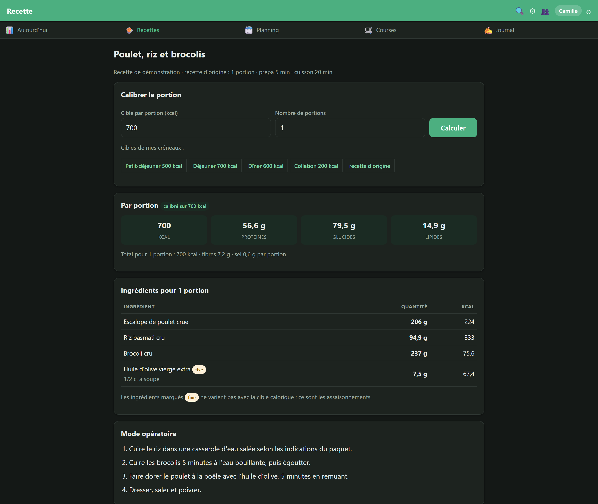
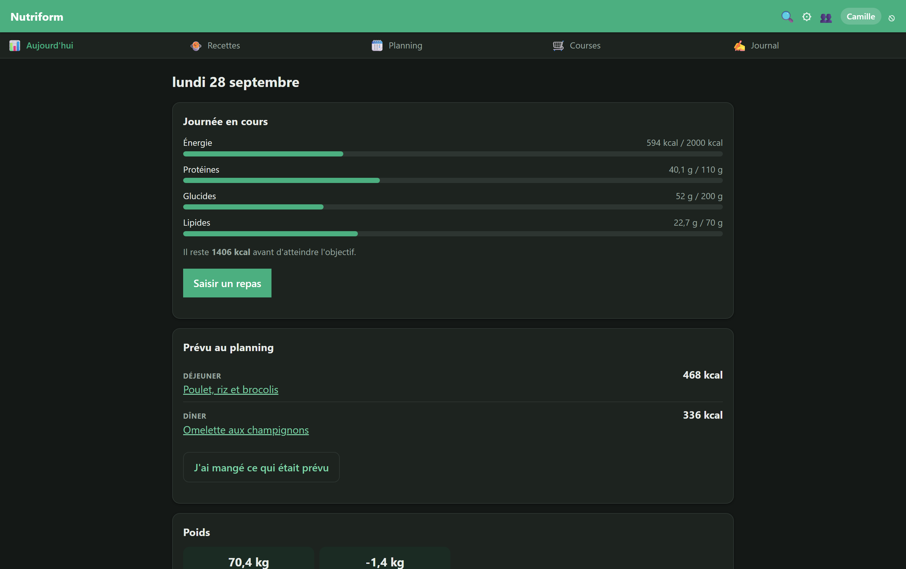
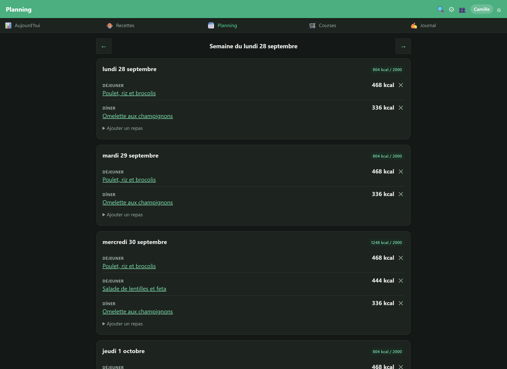
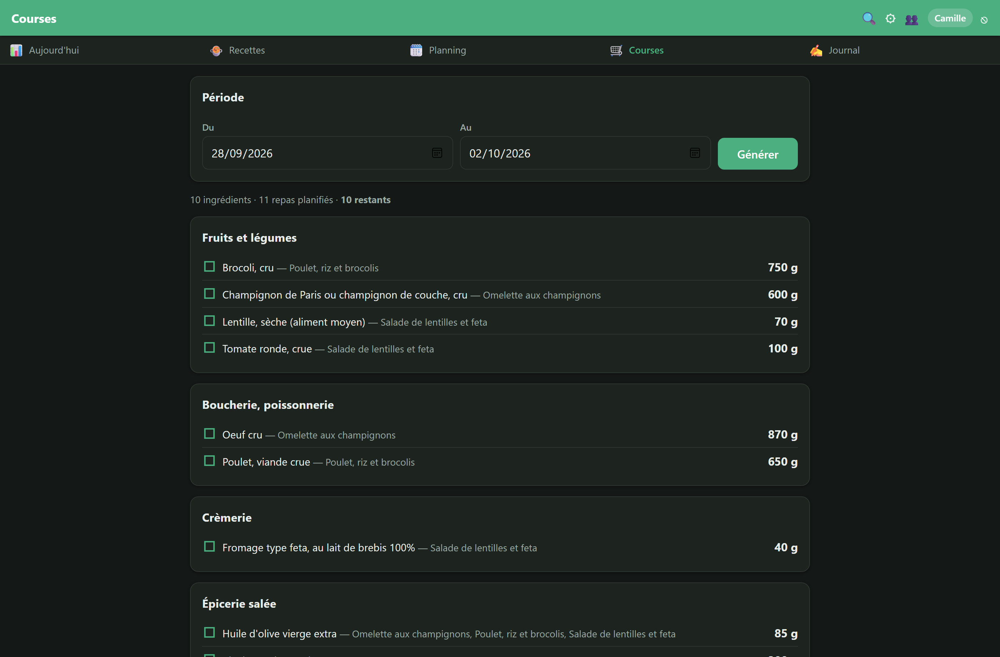
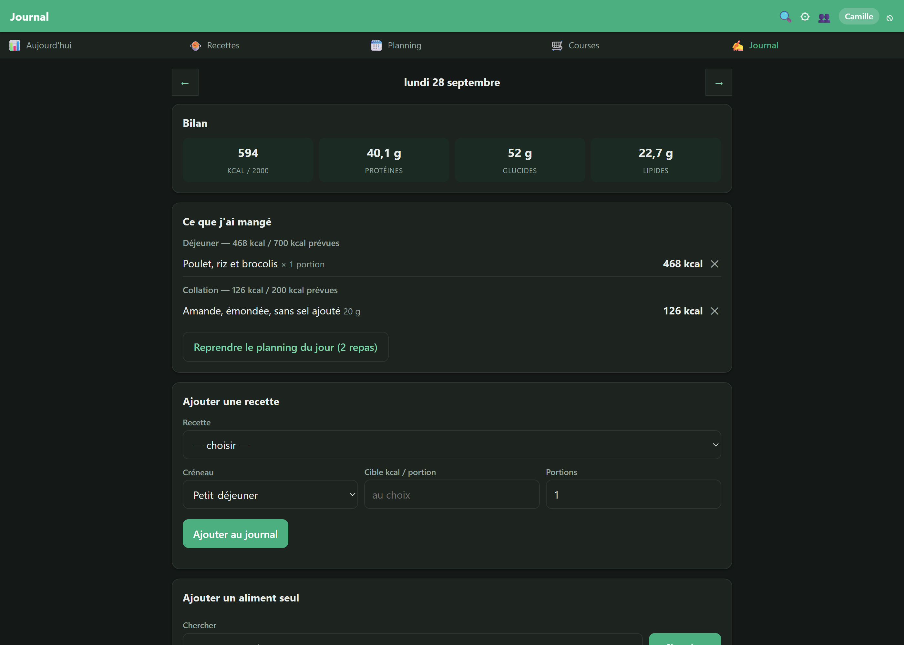
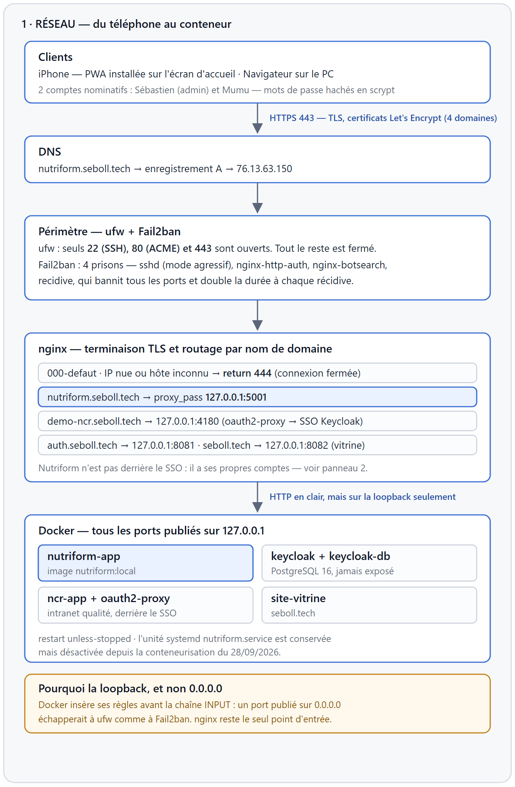
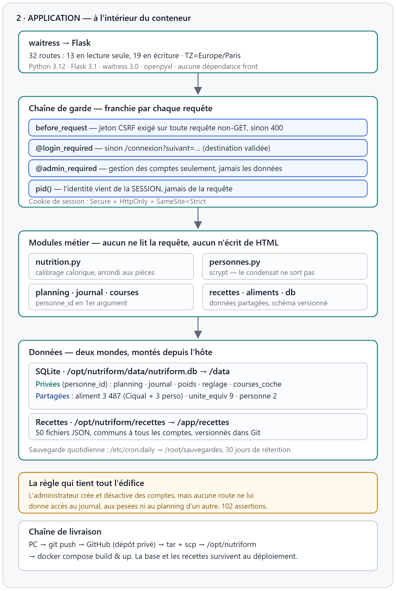

Le problème
Suivre un régime suppose de savoir ce que l'on mange et en quelle quantité. Les outils existants butent sur les mêmes limites.
- Une recette donne une portion, pas la vôtre. Passer d'une portion à 400 kcal à la même recette à 700 kcal impose de recalculer chaque ingrédient à la main — et de se tromper.
- Tout ne se divise pas. « 1,3 œuf » n'a aucun sens, pas plus que 3,4 feuilles de lasagne : un calcul purement proportionnel produit des quantités incuisinables.
- Les valeurs nutritionnelles divergent. Une fiche d'application grand public annonçait 0,19 g de sel pour un plat qui en contient près de 9 g d'après l'étiquette réelle de la sauce employée.
- Partager n'est pas mutualiser. Des proches peuvent partager des recettes ; leur poids et leur journal alimentaire, non.
Captures de démonstration. Les écrans reproduits ici utilisent un compte fictif
et trois recettes neutres écrites pour l'occasion : aucune donnée de santé réelle,
aucune recette tierce.
Le fonctionnement, écran par écran
Calibrage d'une recette — le cœur de l'outil

Aujourd'hui — l'état de la journée en un coup d'œil

Planning — sept jours, quatre créneaux

Liste de courses — entre deux dates, regroupée par rayon

Journal et poids — ce qui a réellement été mangé

Ce que l'application a changé
| Avant | Après |
|---|---|
| Une recette = une seule portion figée | La même recette servie à 400, 600 ou 700 kcal |
| Quantités recalculées à la main, au risque de l'erreur | Recalcul instantané, assaisonnements figés, pièces arrondies |
| Valeurs nutritionnelles reprises telles quelles | Table officielle de l'ANSES, et l'étiquette du produit quand elle diffère |
| Liste de courses reconstituée de mémoire | Agrégée entre deux dates, regroupée par rayon, cochable |
| Outil mono-utilisateur | Un compte par personne, données personnelles cloisonnées |
Le bénéfice s'est surtout révélé sur la fiabilité des chiffres. Le recoupement
systématique des 33 recettes transcrites avec les valeurs annoncées par leur source a
fait apparaître des écarts que le calcul explique : sauces sucrées trois fois plus
caloriques que l'équivalent générique, teneurs en sel sous-estimées d'un facteur vingt,
sous-totaux incohérents entre le sel et le sodium d'une même fiche.
Principes
Les deux schémas ci-dessous ont été relevés sur le serveur, pas dessinés de mémoire : règles de pare-feu, ports publiés, montages et comptages de tables proviennent d'une inspection de la machine en production.
- Un seul point d'entrée. Le pare-feu n'ouvre que SSH, HTTP et HTTPS ; tous les conteneurs publient sur la boucle locale. Un port publié largement échapperait au pare-feu comme au bannisseur d'adresses.
- L'adresse IP nue ne répond rien : un hôte inconnu obtient une connexion fermée, sans page ni bannière de version.
- L'identité vient de la session, jamais de la requête. C'est la règle qui garantit le cloisonnement, et une suite de tests la vérifie en trichant délibérément sur les identifiants d'URL.
- Chaîne de garde : jeton anti-CSRF sur toute écriture, cookie de session chiffré, restreint au domaine et inaccessible au JavaScript.
- Sauvegarde quotidienne de la base, avec 30 jours de rétention.
Le chemin du téléphone au conteneur

L'intérieur de l'application

Choix techniques
- Stack : Python · Flask · SQLite · waitress — aucune dépendance front, aucun framework JavaScript. L'application s'installe sur l'écran d'accueil d'un iPhone et fonctionne hors ligne sur les pages déjà visitées.
- Exploitation : conteneur Docker derrière nginx, TLS Let's Encrypt, pare-feu et bannissement automatique des adresses hostiles, sauvegarde quotidienne. Le déploiement est un script idempotent, versionné avec le code.
- Qualité : 394 assertions réparties en 7 suites autonomes, dont une consacrée au seul cloisonnement entre comptes et une autre à la migration de schéma sans perte de données.
- Sécurité : analyse statique du code à chaque évolution. Une redirection ouverte et l'absence de protection anti-CSRF ont été détectées puis corrigées ; un audit maison vérifie en outre que chaque ingrédient pointe vers la bonne fiche du référentiel officiel.
La règle qui tient tout l'édifice. L'administrateur crée et désactive des comptes,
mais aucune route ne lui donne accès au journal, aux pesées ni au planning d'un autre.
Ce n'est pas une intention : c'est vérifié par une suite de tests qui triche
délibérément sur les identifiants d'URL.